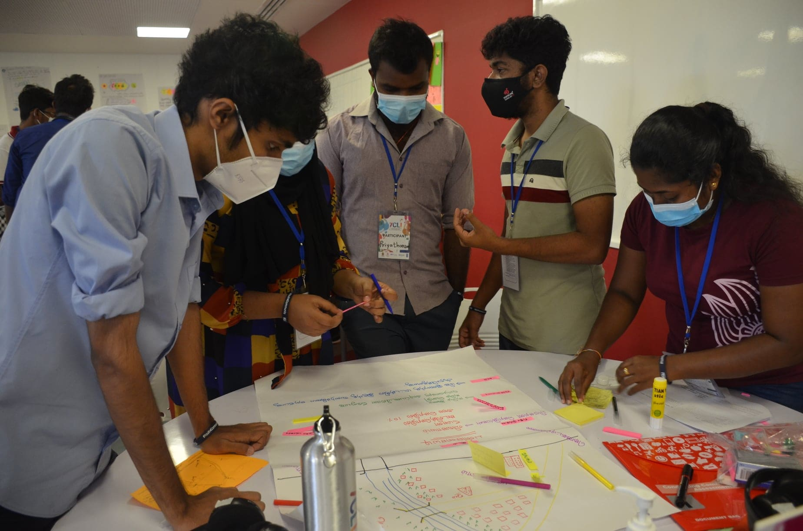
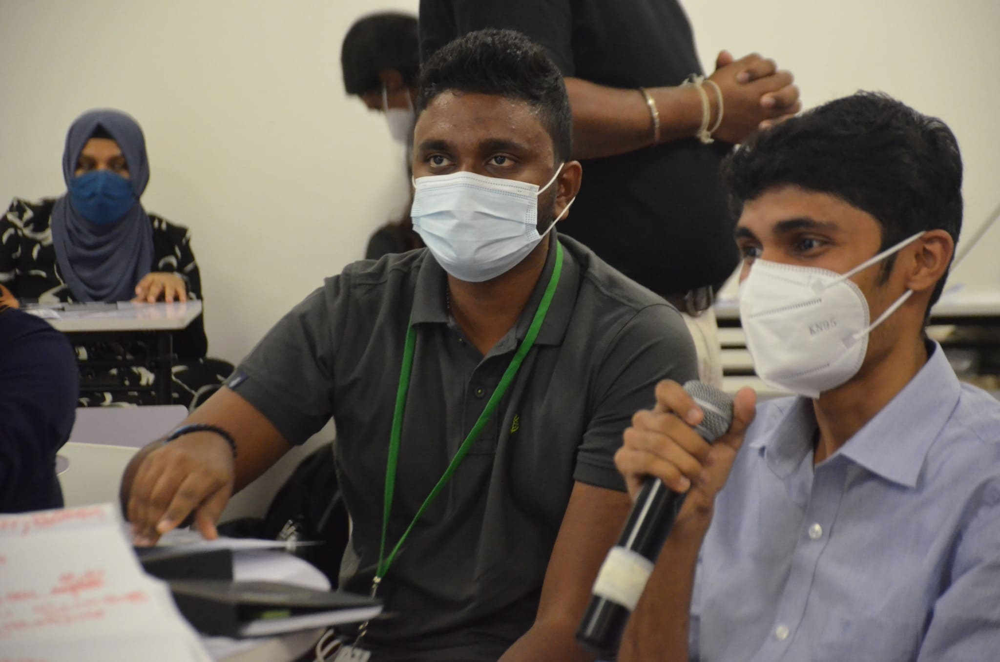
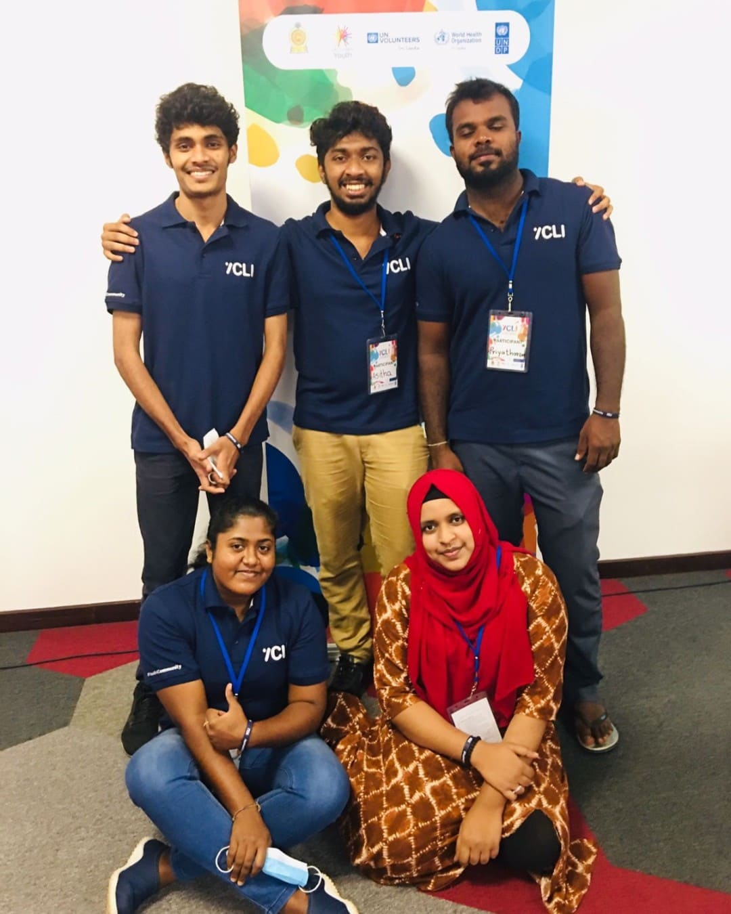
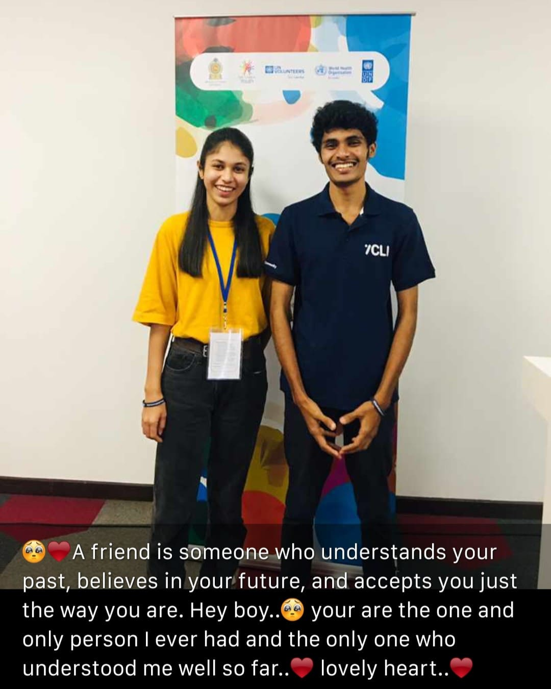

Collaborative Group Work
Participating in the Phase 1 residential training with fellow youth leaders. Our group focused on dissecting community issues using the "Healthy Settings" framework.
This session was instrumental in learning how to identify structural lines dividing the community and preparing for the Community Needs Assessment.


Active Dialogue
Participating in the second round of training with Cohort 02. Here, I am raising a critical question regarding community engagement strategies during a plenary session.
This phase provided a platform to share field experiences and refine our approach to the "Healthy Settings" implementation.
Project Mobilisation
Collaborating with the Ministry of Youth & Sports and UN partners (WHO, UNDP, UNV) to drive community impact.

Phase 01 Team
My team during the 8-day residential training. We worked together to conduct the initial conflict mapping and community assessment.

Phase 03 Training
Reconnecting with peers during the Phase 3 advanced training. A valuable opportunity to consolidate learning and plan future interventions.
Strategic
Blueprint.
The culmination of 12 months of observations. A technical analysis of Aranayake's social fabric, environmental assets, and economic gaps.
Download Assessment (v.3)Field Observations
17 data points scanning the landscape.